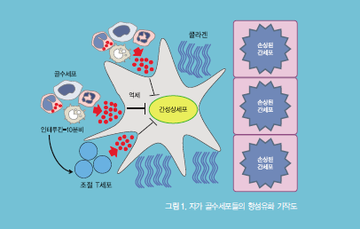
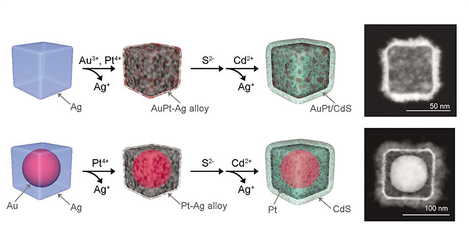
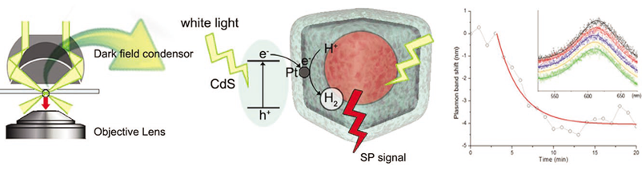

연구성과 10선
연구성과 10선
KAIST RESEARCH ACHIEVEMENTS
수소 제조과정을 나노촉매입자
하나에서 볼 수 있다면?
화학과 송현준
요약
촉매는 현 산업시대에 없어서는 안 되는 중요한 역할을 담당하고 있으며, 아울러 자연에 풍부한 물, 태양광, 이산화탄소 등을 이용하는 차세대 에너지 제조에 있어서도 고효율 촉매 개발은 핵심이 되고 있다. 최근 촉매 효율 및 선택성의 한계를 극복하기 위하여 나노기술이 촉매와 조합된 "나노촉매" 개발 기술이 화두가 되고 있다. 앞으로는 수소 제조, 연료전지 반응, 바이오매스 변환 및 이산화탄소 환원 반응 등 차세대 에너지 기술의 핵심이 되는 반응을 위한 촉매를 입자 각각의 크기, 모양, 표면 형상 및 혼성구조를 디자인하고 나노합성 기술을 이용하여 균일하게 제조할 수 있게 된다. 또한 원하는 촉매 반응을 진행하면서 입자 표면에서 분자 하나하나가 생성되는 반응을 모니터할 수 있다. 이렇게 얻어진 정보는 피드백되어 나노촉매의 디자인에 적용되고, 원하는 반응을 낮은 에너지 소모로 고효율, 고선택성 및 고내구성으로 진행시킬 수 있게 된다. 결과적으로 현재 산업에서 이용되고 있는 석유화학, 고분자, 정밀화학 및 차세대 에너지 제조 및 환경을 위한 최적화된 나노촉매의 개발로 산업 및 인류의 삶에 변혁을 일으킬 수 있다.
연구내용

이 방법은 단일 입자 수준에서 이종물질들을 포함한 다양한 비균일 반응을 모니터하는데 이용될 수 있다. 또한 레이저 광원을 이용하여 분자 수준까지의 극히 높은 감도로 빠른 반응을 모니터할 수 있을 것으로 기대된다. 원하는 반응, 특히 에너지 제조 반응을 위한 촉매 개발은 매우 중요하나 현재까지는 벌크 상태에서의 접근만이 가능하였다. 본 연구에서는 근본적인 반응 메커니즘 이해와 모니터링을 위하여 나노합성기술을 도입하여 혼성 광촉매의 구조를 정밀하게 조절하는데 성공하였으며, 단입자 암시야 분광학을 통하여 입자 하나하나의 표면에서 일어나는 수소기체 제조 반응을 실시간으로 모니터링할 수 있었다. 이 방법은 대부분의 이종조성을 지닌 불균일 촉매에 적용할 수 있다는 점에서 산 업적으로 중요한 촉매 개발에 크게 기여할 것 으로 기대된다. 최근 촉매 효율 및 선택성의 한계를 극복하기 위하여 나노기술이 촉매와 조합된 "나노촉매" 개발 기술이 화두가 되고 있다.
나노합성기술을 도입한 백금/카드뮴 황화물/금 빈껍질 나노촉매의 정밀 제조
은 나노입방체를 매개로 갈바닉 치환반응, 황화 반응, 양이온 교환반응의 삼단계 반응과정을 통하여 다층의 입방체 구조를 정밀하게 조절할 수 있었다. 이 때 백금/카드뮴 황화물은 수소제조 촉매로 작용하며, 빈껍질 구조 내에 생성된 수소가 모이도록 디자인하였고, 금 입자는 빛의 산란을 통하여 반응을 모니터링할 수 있는 표지로 첨가되었다.

단입자 암시야 분광법을 이용한 단입자 표면에서의 수소제조반응 연구
단입자 암시야 분광법을 이용하여 반응 중 단일 나노입자 표면에서 일어나는 젖산 분해를 통한 수소제조 반응을 모니터링하였다. 금 입자로부터 비롯되는 표면 플라즈몬 밴드의 이동을 분석하여 반응속도를 시뮬레이션과 맞추어, 반응속도 상수와 빈껍질을 통한 확산계수, 반응 활성자리의 상대적인 배열 등 구조적인 정보를 각각의 촉매 입자에 대하여 분석해 낼 수 있었다.

연구비 지원
교육과학기술부와 한국연구재단이 추진하는 중견연구자지원사업(핵심), 선도연구센터사업(ERC)의 지원을 받았음.
연구실적
J. Am. Chem. Soc. 2012, 134, 1221-1227에 게재되었음. 다양한 불균일 촉매 반응을 대상으로 후속 연구 진행 중.